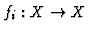
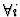
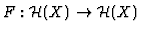
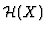
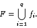
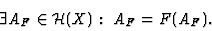
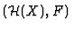
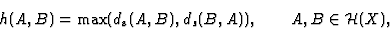
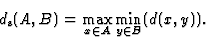

Following M. Barnsley [2], under fractals we mean compact subsets of a complete metric space.
A deterministic Iterated Function System (IFS)
[2] is a structure
| F = ((X,d), f1, f2, ..., fN), | (1) |

- a contiguous function
. An IFS F induces an operator
, where
- the space of all compact subsets of X: |
(2) |
The metric space
 ,
with Hausdorff metric
h, is also complete. When functions fi are contractions,
the IFS is hyperbolic. In this case, there is a compact
subset AF of X which is the fixed point of the operator F:
,
with Hausdorff metric
h, is also complete. When functions fi are contractions,
the IFS is hyperbolic. In this case, there is a compact
subset AF of X which is the fixed point of the operator F:
 |
(3) |
Such a set is called the attractor of the IFS F. The pair

is a set dynamical system whose attractive point is a set (rather than a point) - the attractor AF. Realizing the dynamics of such a dynamical system, we can build a fractal set.The Hausdorff metric is defined as follows:
 |
(4) |
where

We are dealing here with hyperbolic IFSs with all fi affine transformations.